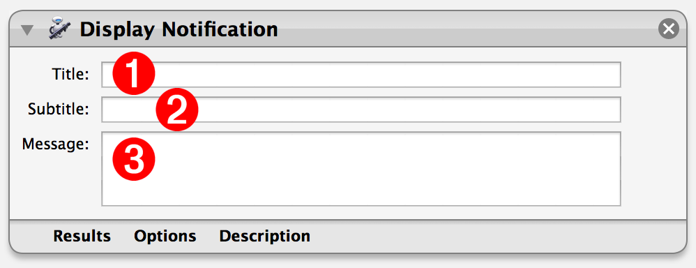
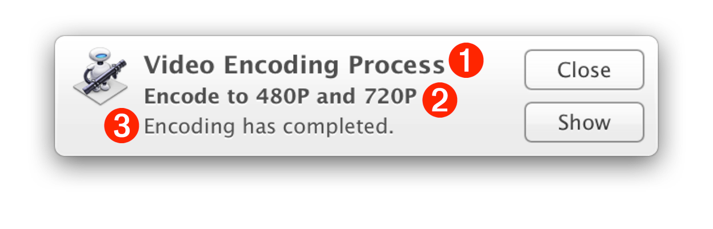
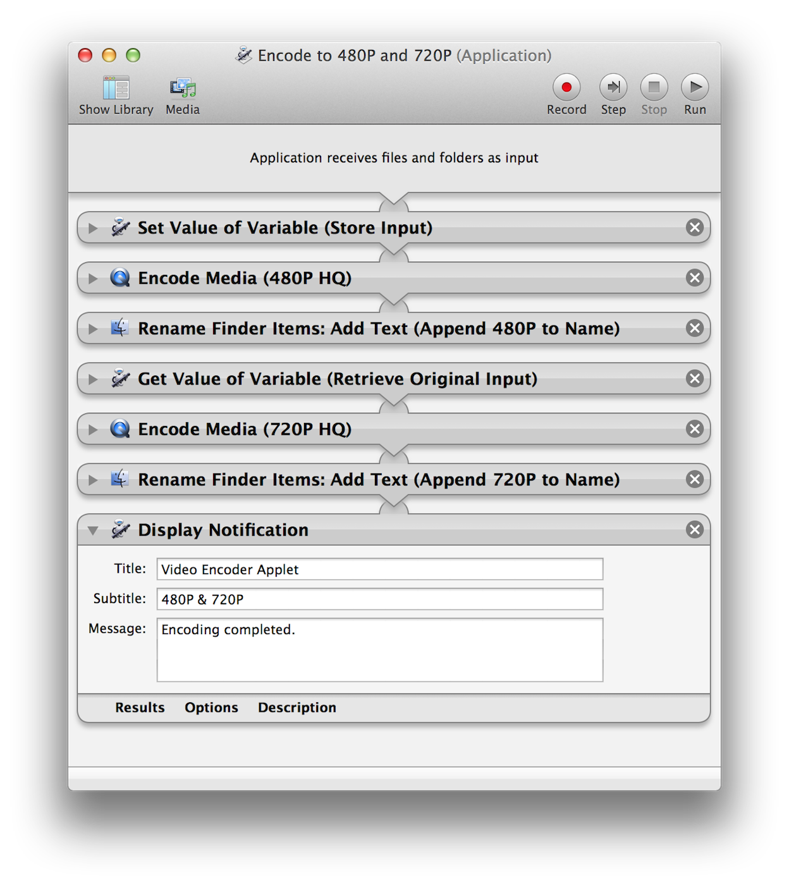

Automator in Mavericks introduces support for system notification via a new Display Notification action. This action can be placed at the beginning, end, or anywhere within a workflow. The action will pass-through any input provided by a previous action.
The following describes the function of the various input fields of the action view, and how the provided data will be displayed in a notification window. Note that, in order for the action to run, at least one of the three input fields must contain text.

(1) Notification Title - Enter the title for the notification window (see below) in the input field of the action view (see above). This input field accepts Automator workflow variables.
(2) Notification Subtitle - Enter the subtitle for the notification window (see below) in the input field of the action view (see above). This input field accepts Automator workflow variables.
(3) Notification Message - Enter the message for the notification window (see below) in the input field of the action view (see above). This input field does not accept Automator workflow variables.

(⬆ see above) The example notification window, displayed as an alert.
NOTE: the type of notification window (banner or alert) is determined by the notifications settings for automation applet, chosen in the Notifications system preference pane. (more info here)
Using the Display Notification action in Automator workflows can be as simple as adding the action to the end of a workflow, and entering the relevant title, subtitle, and description. (⬇ see below)

When the workflow is run, it will post a system notification (⬇ see below) after the processing actions have completed.
DOWNLOAD the example video encoder applet. To use, drag a high-resolution movie file onto the applet.